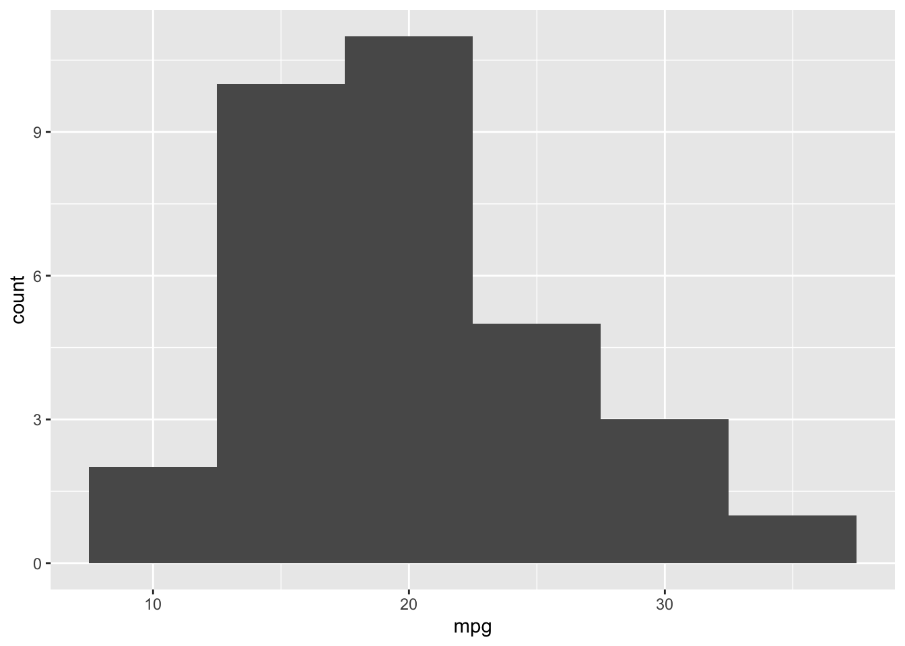

Editing a chapter
Headers
Headers are designated by a line beginning with a #. The level of the header is controlled by the number of #s. By default headers are auto-numbered, if you would like to remove auto-numbering add {-} at the end of the header.
0.0.1 This is a level 3 header with auto-numbering
### This is a level 3 header with auto-numberingThis is a level 4 header without auto-numbering
#### This is a level 4 header without auto-numbering {-}Formatting text
Italics and bold
To italicise text, enclose words in *. For bold, use **. For instance:
“Note: no Eucalyptus marginata was observed.”
would be written as:
**Note:** no *Eucalyptus marginata* was observed.Quotes
Quotes are declared by a > at the beginning of the line to be quoted. For instance:
“This is a quote”
would be written as:
> "This is a quote"Links
Links to external websites take the structure [the text to be linked](the link). For instance:
“For more information read the bookdown book”
would be written as:
For more information read the [bookdown book](https://bookdown.org/yihui/bookdown/)Lists
Unnumbered lists
Unnumbered lists are declared with a - on each line. For instance:
- Item 1
- Item 2
- Item 3
would be written as:
- Item 1
- Item 2
- Item 3Numbered lists
Numbered lists are declared with a half bracketed number on each line e.g.(1)). For instance:
- Item 2
- Item 3
- Item 4
would be written as:
2) Item 2
3) Item 3
4) Item 4Figures
Use the following R chunk to include figures:
```{r yourImageCitationID, echo = FALSE, out.width='100%', fig.cap = "The figure caption."}
knitr::include_graphics("images/picture1.png")
```Refer to the figure using:\@ref(type:yourImageCitationID). For example:
“It therefore is known to concentrate in the mid to southern regions (Figure 6).”
Figure 6: The figure caption.
Mathematics
In-line equations
An in-line equation is designated by starting and ending the equation with a $ operator. For instance, the sentence:
“Where \(P(s)\) is the population of the species….”
would be written as:
Where $P(s)$ is the population of the species...Full equations
Full equations are seperate from the body text and are declared by $$ on the opening and closing lines. For instance, the equation:
\[ P(s) = 100e^{0.03t} \]
would be written as:
$$
P(s) = 100e^{0.03t}
$$Cross-referencing equations
To cross-reference equations include (\#eq:yourCitationID) at the end of your equation. This can then be called in-text using \@ref(eq:yourCitationID). For instance:
“Equation (1) describes the growth of the species…”
\[ P(s) = 100e^{0.03t} \tag{1} \]
would be written as:
Equation \@ref(eq:populationGrowth) describes the growth of the species...
$$
P(s) = 100e^{0.03t}
(\#eq:populationGrowth)
$$Code chunks
Code chunks. Like equations they can take both in-line and multi-line forms.
In-line code chunks
An in-line code chunk is designated by starting and ending with a backtick (`). For instance:
“Load the graphing package with library(ggplot2) and…”
would be written as:
Load the graphing package with `library(ggplot2)` and...Multi-line code chunks
Multi-line code chunks are separate from the body text and are declared by three backticks on the opening and closing lines. For instance:
library(ggplot2)
ggplot(mtcars,aes(x=mpg)) +
geom_histogram(binwidth=5)would be written as:
```
library(ggplot2)
ggplot(mtcars,aes(x=mpg)) +
geom_histogram(binwidth=5)
```R code chunks
In the above code chunk we’ve written some simple R code to create a histogram. Without telling it otherwise, bookdown will not recognise this as R code and subsequently does nothing with it. To declare to bookdown that the chunk is executable R code, add {r} after the opening backticks. You’ll notice RStudio immediately recognises this and provides some buttons to preview the executed code and controll the output options (e.g. hide the code and just show the plot). For example:
library(ggplot2)
ggplot(mtcars,aes(x=mpg)) +
geom_histogram(binwidth=5)
would be written as:
```{r}
library(ggplot2)
ggplot(mtcars,aes(x=mpg)) +
geom_histogram(binwidth=5)
```